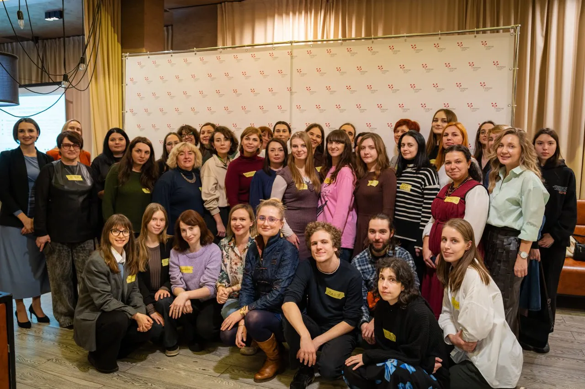
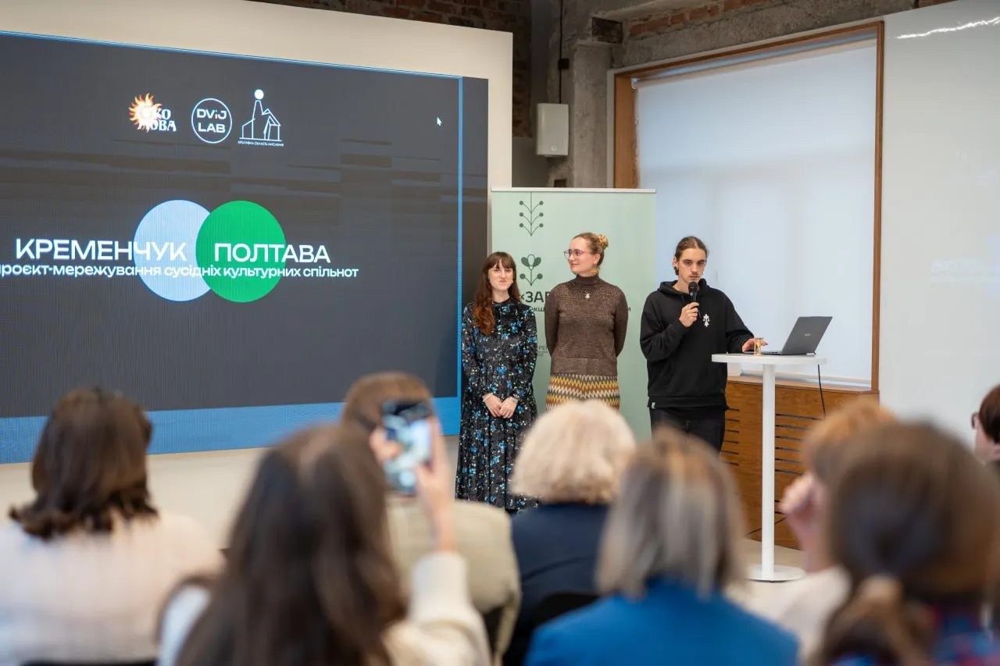
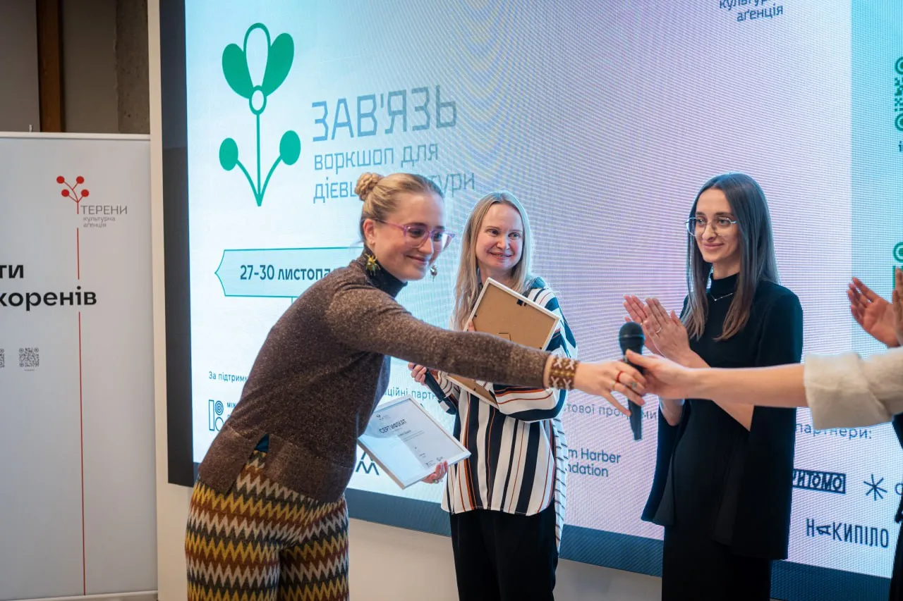
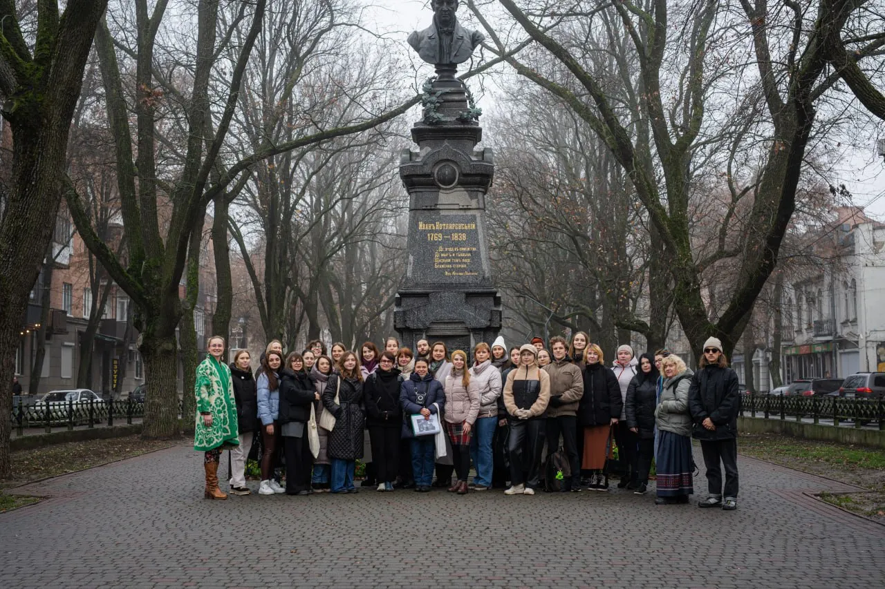

«Зав'язь» — воркшоп для культурних діячів

Ми розглядаємо освіту як важливу складову розвитку незалежного культурного середовища.
Працюємо над посиленням власних компетенцій у сфері культурного менеджменту, продюсування, комунікацій, партнерств і роботи з культурною спадщиною, а також долучаємося до освітніх програм, професійних зустрічей та міждисциплінарних обмінів.
Для нас навчання — це не лише здобуття нових знань, а й можливість переосмислювати власні підходи, знаходити партнерів і перетворювати ідеї на реальні культурні проєкти.
Фото



«Зав'язь» — воркшоп для культурних діячів
У 2026 році команда ГО «Креативна область Мислення» взяла участь у чотириденному інтенсиві «Зав'язь», організованому культурною агенцією «Терени» в Полтаві.
Програма охоплювала культурний менеджмент, фінансування проєктів, побудову партнерств, комунікаційні стратегії, роботу в умовах війни, пам'ять і меморіалізацію. Учасники також знайомилися з діяльністю культурних інституцій та міжнародних фондів, зокрема Міжнародного фонду «Відродження» і Goethe-Institut.
Важливим етапом стала презентація учасницьких ідей та фінальний пітчинг. У співпраці з ГО «О'Комова» (Кременчук) і ГО «ДВІЖЛАБ» (Полтава) наша команда представила концепцію міжрегіонального проєкту «Намисто» — культурного обміну між двома містами. Проєкт увійшов до трійки переможців і отримав грантову підтримку в розмірі 2 000 євро на реалізацію, а також менторський супровід культурної агенції «Терени». Згодом ця ідея стала дводенним шоукейс-фестивалем сучасного мистецтва Полтави й Кременчука.
Участь у програмі стала для команди можливістю переглянути внутрішні процеси, посилити професійні навички та налагодити нові міжрегіональні зв'язки.
Організатор програми «Зав'язь» — культурна агенція «Терени», за підтримки Міжнародного фонду «Відродження» та Goethe-Institut. Фото — Станіслава Пантелей.
Інші проєкти ГО «Креативна область мислення»